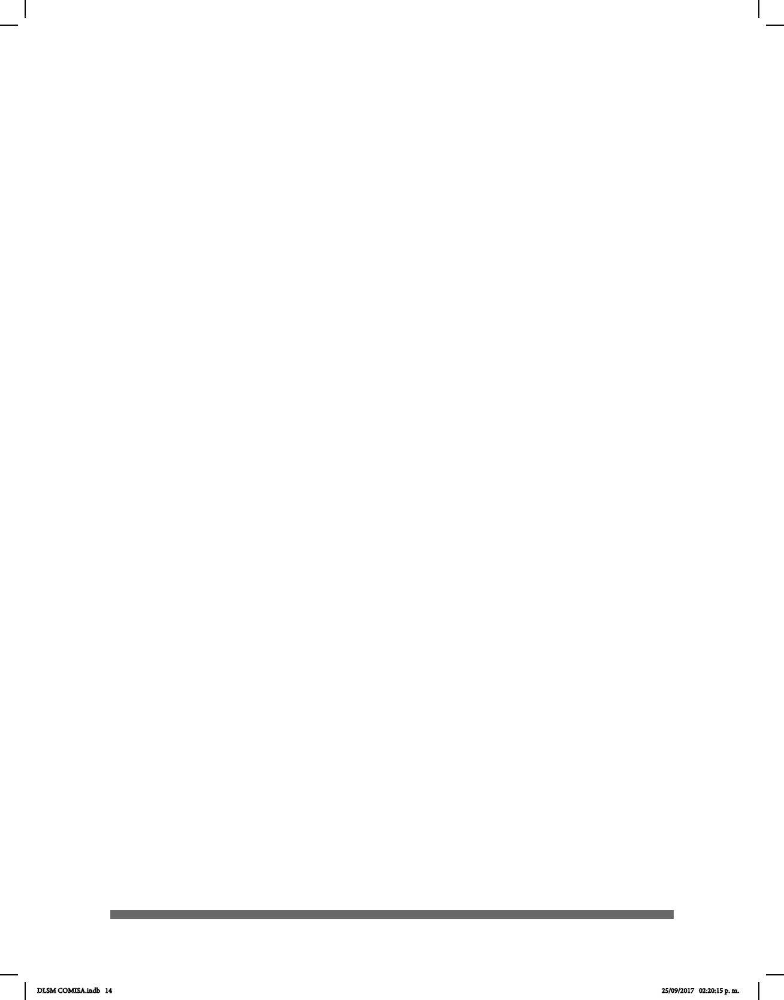

14
Me siento muy honrado por la oportunidad que me ha dado la Comunidad Sorda para
presentar el Diccionario de Lengua de Señas Mexicana en la Ciudad de México (DLSM),
una obra única en su tipo cuya contribución radica en la perspectiva desde la cual está
construido, pues busca preservar el patrimonio lingüístico, así como portar y difundir los
valores culturales de las personas sordas.
Es un documento que fue diseñado y desarrollado por la propia Comunidad Sorda, para
todos los interesados en el tema, en el que trabajaron metódicamente personas sordas
de toda la región metropolitana; quienes participaron en todo el proceso de construcción,
incluyendo la indagación, la elaboración y la validación del material lexicográco. La LSM
(Lengua de Señas Mexicana) unica a la colectividad en la que conviven varios grupos
lingüísticos.
De este modo, la unicación de la Comunidad Sorda representa un elemento muy
importante para el bienestar social y psicológico del individuo que pertenece a ella,
debido a la función sociointegradora de la Lengua de Señas. Asimismo permite que la
minoría lingüística que la origina, sea reconocida por la sociedad en su conjunto.
Considerando que la variación regional en la LSM es un fenómeno natural como
en toda lengua, las señas recogidas en la obra fueron compendiadas en diversas
regiones geográcas de la Ciudad de México con la nalidad de evitar el predominio de las
señas utilizadas en una sola región por encima de otras y que pudieran ser relegadas por
otras variantes. En esta obra se han registrado, fundamentalmente, señas que usan las
personas sordas de la región metropolitana.
Agradezco la amplia convocatoria que se logró para que este diccionario sea una
realidad. A este proceso de más de un año ininterrumpido de trabajos se sumaron las
voluntades de académicos, investigadores, intérpretes, lingüistas, personas sordas
provenientes de todas las Delegaciones Políticas de la Ciudad de México quienes
participaron en la selección de las señas, su descripción y su ordenamiento; modelos
que permitieron que sus manos hablaran y se plasmaran en papel: mujeres y hombres
entusiastas y comprometidos con su comunidad.
Por medio de este diccionario bilingüe esperamos contribuir a otorgar autonomía y
legitimidad a la Lengua de Señas Mexicana. La lengua a través de la cual interactúan
diariamente los miembros de la Comunidad Sorda de la CDMX.
Este documento va dirigido principalmente a los sordos que conocen la LSM y el es-
pañol, con el n de reforzar su interés en el tema y profundizar sus conocimientos, sin
DIRECTOR GENERAL DEL INSTITUTO DE LAS
PERSONAS CON DISCAPACIDAD CIUDAD DE MÉXICO
DLSM COMISA.indb 14 25/09/2017 02:20:15 p. m.